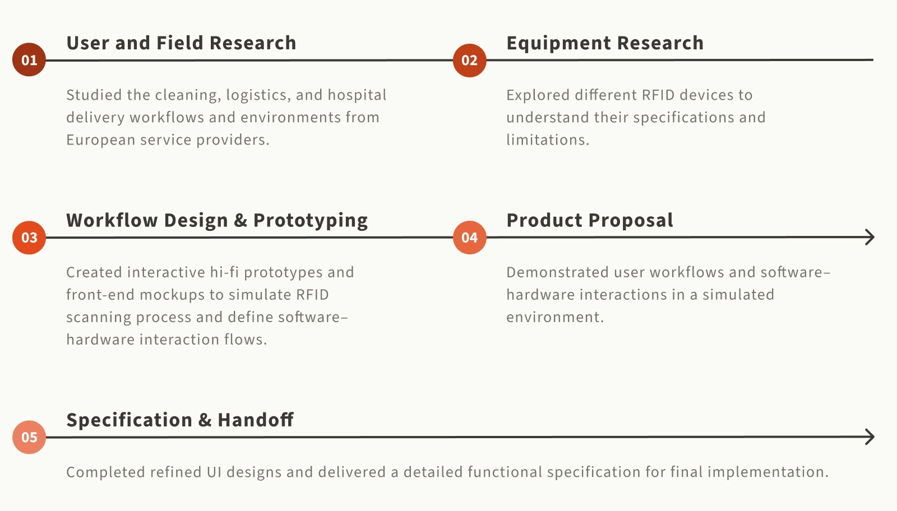
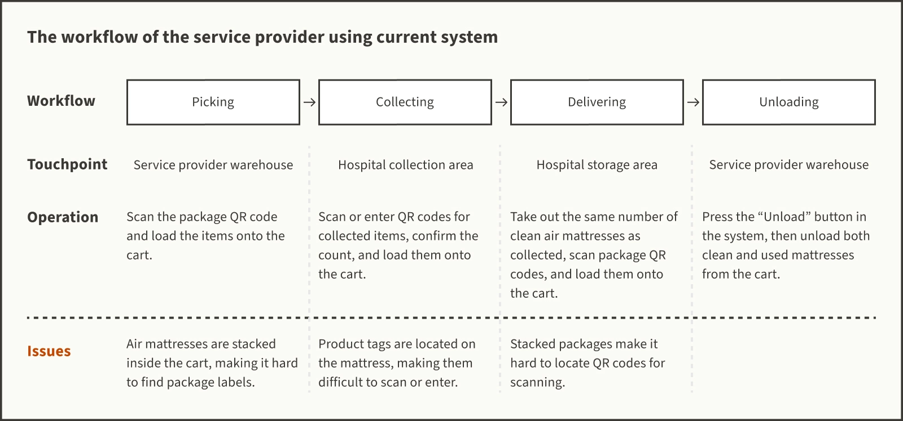
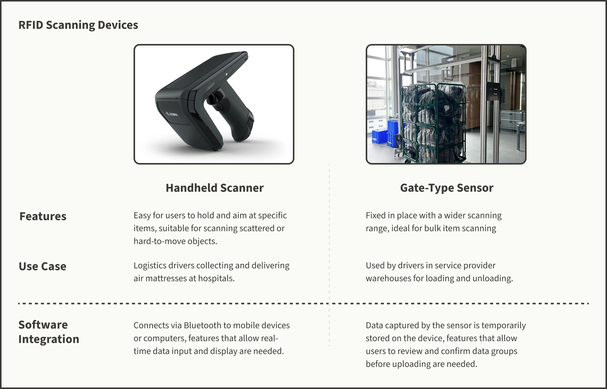
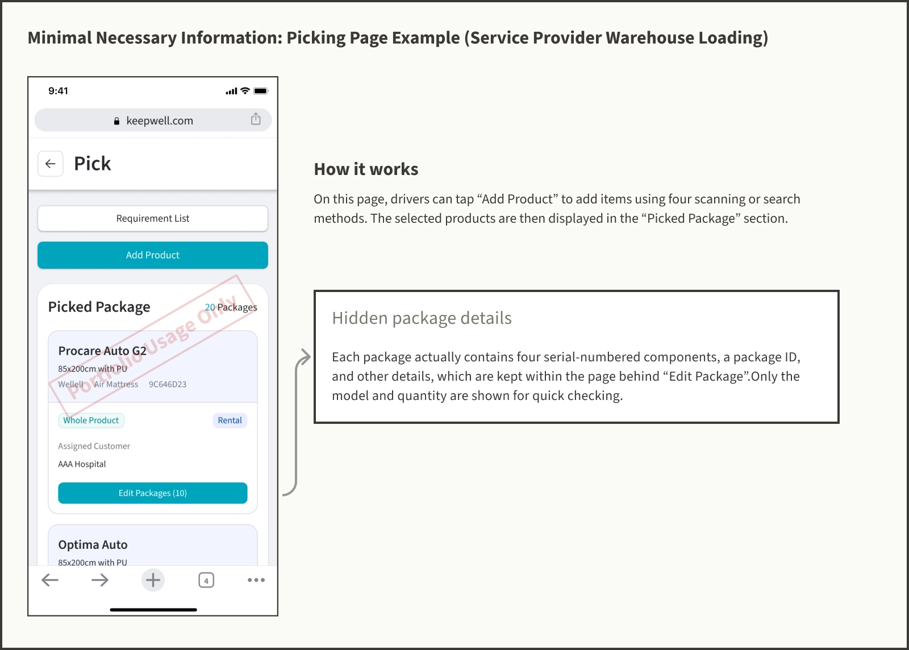
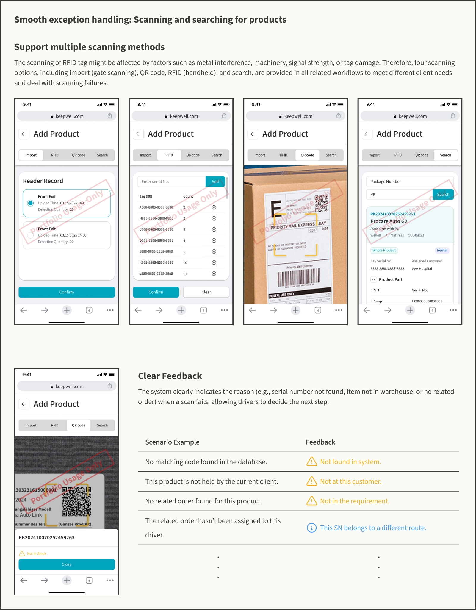

This project is under an NDA, so detailed information cannot be shared on public platforms.
Project Background

KeepWell is a SaaS platform designed to streamline the decontamination and rental management of medical equipment, currently focusing on medical air mattresses. By combining QR code asset tags with medical devices, it helps European service providers manage their entire process — from on-site inventory and disinfection to orders, logistics, and customer management.
After meeting with a Danish service provider, we found that their logistics workflow was not well suited for QR code scanning. Since QR code asset tags require users to locate and visually access the tag to scan it, it's impossible for the service provider who transports air mattresses in bulk using cage carts.

Problem Definition
QR code asset tags require users to locate and scan the label on each product during logistics operations. However, stacked mattresses make it difficult or even impossible to scan the tags.
Frequent scanning reduce delivery and collection efficiency.
Nurses usually don’t stack collected air mattresses neatly, instead, they’re scattered in the return area. Drivers typically confirm them by sight and load them directly onto the cart without counting each item one by one.
Stacked products makes it difficult to locate asset tags.
Some service providers stack air mattresses in metal cage carts where QR codes are not always visible, making it impossible for drivers to scan every code.

Goal Breakdown

Business Goal: Increase client base and revenue
The addition of RFID scanning aims to improve customer satisfaction and strengthen market competitiveness.

Product Goal: Integrate RFID operations into the logistics workflow
Provide complete RFID asset tracking across pickup, delivery, collection, and warehouse processes.

Design Goal: Support multiple scanning workflows and error-state guidance
Enable users to quickly switch between scanning modes on mobile devices and provide clear prompts when unexpected situations occur during scanning.
Environment & Equipment Research
Different contexts require multiple types of RFID devices
Through on-site research at service provider's facilities, we found that the logistics workflow required two types of RFID scanners. KeepWell needed to support both scanning methods to meet different usage scenarios and improve operational efficiency.

Software Prototype
According to our research, service providers focus on two key tracking points in logistics — when air mattresses are delivered to hospitals and when they are collected by drivers, which serve as the basis for rental billing. For drivers, the main concern on-site is the number of collected mattresses, ensuring the same number of clean ones are delivered.
Details such as product serial numbers, damage conditions, and exact counts are verified only after the items are unloaded at the warehouse by the cleaning and inspection staff. Therefore, I integrated the RFID feature into the logistics module based on two design principles:
- Minimal necessary information: Focus on displaying the scanned model and quantity, while detailed product information is placed on a secondary page.
- Smooth exception handling: When scanning fails, for example, due to a damaged RFID tag or data inconsistency, the system provides clear prompts and alternative actions to allow operations to continue seamlessly.


Simulated Environment Design
We recreated the environments of service providers and hospitals based on the user journey map, building a simulated field and an interactive prototype to test design concepts.


Proposal Presentation and Outcome
To validate the concept, we demonstrated different RFID scanning methods and results using a simulated work environment. Through the proposal presentation, we outlined the software development roadmap and implementation plan. The client later confirmed the purchase agreement in the second half of 2025.


Self-reflection
Usability isn’t universal: design principles must adapt to user context
Our research revealed that both service providers and hospitals often bypass certain steps we initially considered important, such as rechecking product serial numbers, logging precise return times, or inspecting product conditions on-site, simply to keep everything faster. This showed that the interface we originally designed to reduce errors and improve data accuracy, based on general usability principles, ended up being unnecessarily complex.
Highly coupled systems raise modification costs: modular flexibility is key to scalable solutions
In the original system design, modifying any module could cause the entire workflow to fail due to the tightly coupled data between modules. As a result, we had to put significant effort into restructuring the system to meet the service provider’s needs by making each module independently modifiable.
From this experience, we should design with modular integration in mind when serving users with diverse workflows, enabling quick adaptation to different operational processes without costly redesigns.